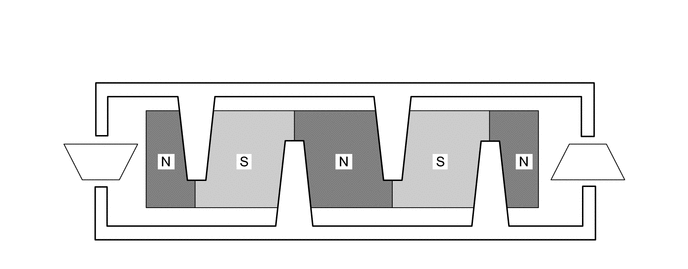
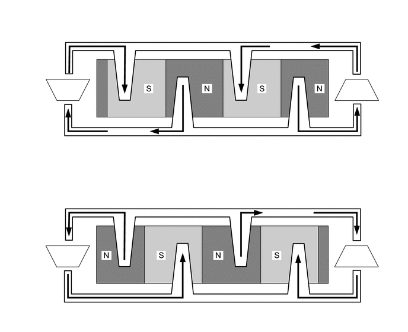
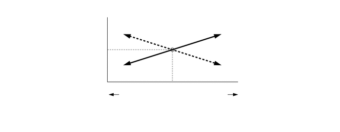

NM3140CG
_55
转向
_024700
助力系统
_0118338
动力转向系统
DE
详情
F
助力系统 动力转向系统 详情 扭矩传感器
工作情况
a.
未转动方向盘时
i.
如果车辆直线行驶且驾驶员未转动方向盘，则磁轭位于多极磁铁的 N 极 和 S 极中间。因此，霍尔集成电路之间没有磁通量穿过。 在此情况下，霍尔集成电路将规定电压输出至动力转向 ECU 总成以指示未向方向盘施加扭矩。 因此，不向马达供电。

2.042,1.104 2.281,0.24
2.281,0.24 2.469,0.24
true
3.5,1.302 3.781,0.26
3.781,0.26 3.969,0.26
true
2.51,0.135 2.823,0.292
0.313,0.156
10
*1
4.021,0.167 4.333,0.323
0.313,0.156
10
*2
0.969,1.542 1.281,1.698
0.313,0.156
10
*3
6.052,1.542 6.365,1.698
0.313,0.156
10
*4
| *1 | 磁轭片 | *2 | 多极磁铁 |
| *3 | 霍尔集成电路 2 | *4 | 霍尔集成电路 1 |
b.
左转或右转方向盘时
i.
驾驶员右转或左转方向盘时，扭杆产生的扭曲使多极磁铁和磁轭之间产生相对位移。
ii.
此时，多极磁铁的 N 极至 S 极的磁通量会从霍尔集成电路间穿过。 系统根据从霍尔集成电路间穿过的磁通量的方向检测方向盘的转动方向。 霍尔集成电路 1 和霍尔集成电路 2 对置安装。因此，2 个霍尔集成电路的输出特性始终相反。系统监测这些霍尔集成电路的不同输出以检测故障。
iii.
霍尔集成电路越接近各极的中心，磁通量密度就越高。各霍尔集成电路将这些磁通量波动转化为电压波动，以将方向盘的扭矩传输至动力转向 ECU 总成。

0.188,3 6.969,5.656
6.781,2.656
0.188,0.177 6.969,2.813
6.781,2.635
2.281,0.875 2.365,0.344
2.365,0.344 2.542,0.344
true
3.5,1.24 3.635,0.354
3.635,0.354 3.813,0.354
true
2.292,3.802 2.396,3.208
2.396,3.208 2.563,3.208
true
3.802,4.104 3.958,3.219
3.958,3.219 4.115,3.219
true
2.583,0.25 2.844,0.531
0.26,0.281
10
*1
3.885,0.26 4.146,0.542
0.26,0.281
10
*2
1.104,1.427 1.365,1.708
0.26,0.281
10
*3
1.094,4.385 1.354,4.667
0.26,0.281
10
*3
6.188,4.375 6.448,4.656
0.26,0.281
10
*4
6.188,1.458 6.448,1.74
0.26,0.281
10
*4
0.25,0.208 0.635,0.552
0.385,0.344
10
*a
0.26,3.052 0.677,3.406
0.417,0.354
10
*b
2.615,3.104 2.875,3.385
0.26,0.281
10
*1
4.177,3.115 4.438,3.396
0.26,0.281
10
*2
| *1 | 磁轭片 | *2 | 多极磁铁 |
| *3 | 霍尔集成电路 2 | *4 | 霍尔集成电路 1 |
| *a | 右转方向盘时。 | *b | 左转方向盘时。 |

|
磁通量的方向 | - | - |
c.
扭矩传感器输出特性
i.
驾驶员未转动方向盘时，动力转向扭矩传感器将规定电压 (2.5 V) 输出至动力转向 ECU 总成。只要输出规定电压，动力转向 ECU 总成即可确定未向方向盘施加扭矩。
ii.
驾驶员左转或右转方向盘时，从动力转向扭矩传感器输出至动力转向 ECU 总成的电压将会发生变化。根据变化，动力转向 ECU 总成确定由驾驶员输入的转向扭矩和转向方向。

3.625,1.01 3.792,0.219
3.792,0.219 3.948,0.219
true
3.156,1.927 5,2.188
1.844,0.26
10
false
扭杆的扭转角
1.677,1.906 2.302,2.26
0.625,0.354
10
false
左转
5.115,1.896 5.844,2.25
0.729,0.354
10
false
右转
2.01,0.958 2.26,1.313
0.25,0.354
10
false
2.5
2.115,1.635 2.365,1.99
0.25,0.354
10
false
0
2.021,0.271 2.302,0.583
0.281,0.313
10
false
5.0
2.198,0 2.479,0.313
0.281,0.313
10
false
[V]
5.073,1.583 5.885,1.896
0.813,0.313
10
false
[度]
3.615,1.74 3.865,1.969
0.25,0.229
10
false
0
4.74,0.573 6.76,0.917
2.021,0.344
10
false
霍尔集成电路 1 的信号
4.74,1.219 6.865,1.5
2.125,0.281
10
false
霍尔集成电路 2 的信号
3.052,2.354 5.458,2.708
2.406,0.354
10
false
扭矩传感器输出特性
4.01,0.115 5.24,0.469
1.229,0.354
10
false
中立位置